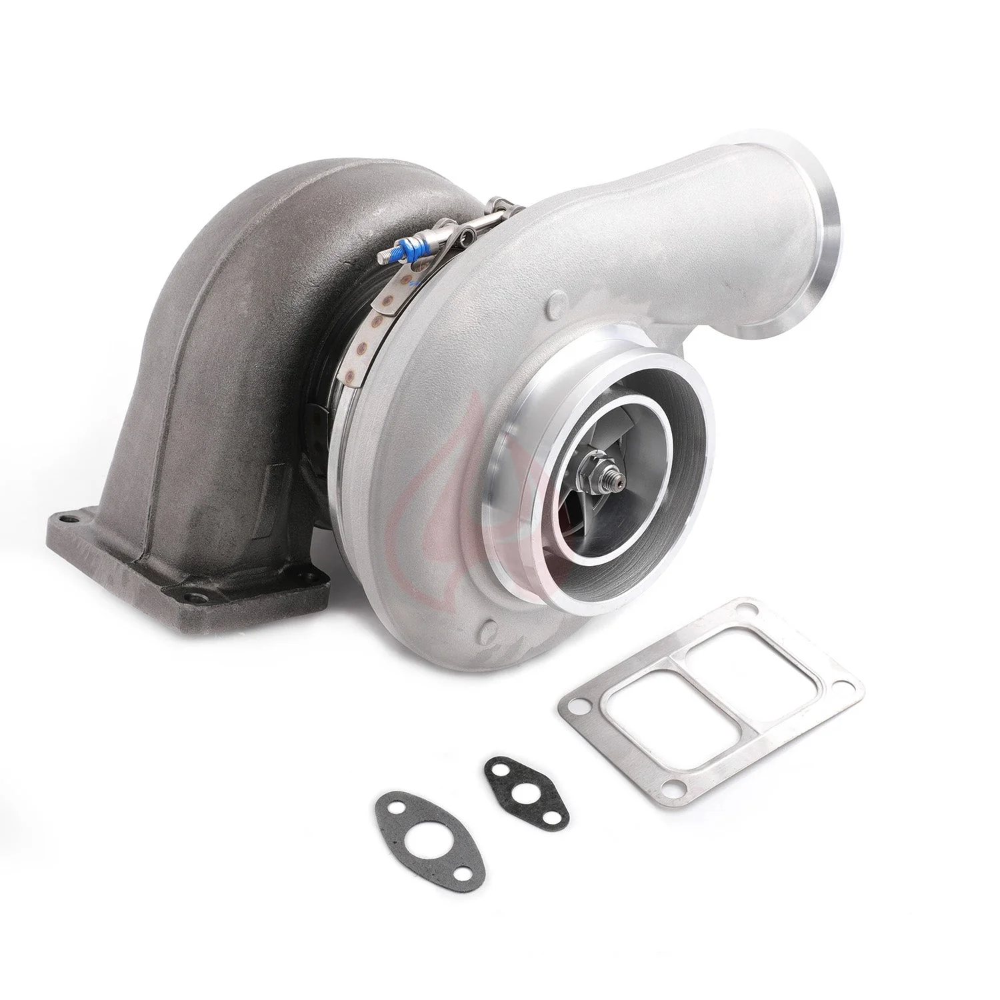

1 / 121000HP S400SX4-75 S475 turbosprężarka T6 Twin Scroll 1.32A/R 171702 turbosprężarka FT029210
Zastosowanie: Uniwersalna turbosprężarka do zastosowań wyczynowych, samochodów wyścigowych itp. Cechy produktu: -Podwójne hydrodynamiczne łożyska poprzeczne -Rozszerzona technologia końcówek odlewanego koła sprężarki -Dostępne opcje obudowy turbiny typu Twin Scroll - Komponent zrównoważony, zrównoważony dynamicznie niż VSR HIGH SPEED, zrównoważony przy użyciu stanu wyważarki, średnio 0,5 mg lub mniej -Zalecana moc a…
Application: Universal turbo for performance use, racing car etc. Features: -Twin hydrodynamic journal bearings -Extended tip technology cast compressor wheel -Twin scroll turbine housing options available -Component balanced, dynamic balanced than VSR HIGH SPEED balanced using a state of the balancing machine, avg 0.5 mg or less -Recomand application horsepower: 550-1000HP, Recomand application oil pressure: 30~45PSI -If boost presure higher than 2.5 Bar, it will significantly reduce the turbo lifespan and may result in damaging of you engine -The accessories in the photos are included -1 year warranty for any manufacturing defect Technical Specifications: Durable Compressor Wheel: 14(7+7) blades, Size: 74.4 mm inducer / 101.5mm exducer, with exclusive Extended Tip Technology(105.5mm) Turbine Wheel: 10 blades, Size: 88*95.7 mm, cast in Inconel Material for high-temperature operation Turbine: 1.32 A/R Twin Scroll, with 'T6', divided entry, and 5″ Marmon S400 Discharge
2699,99 PLN
Opis produktu
Zastosowanie:
Uniwersalna turbosprężarka do zastosowań wyczynowych, samochodów wyścigowych itp.
Cechy produktu:
-Podwójne hydrodynamiczne łożyska poprzeczne
-Rozszerzona technologia końcówek odlewanego koła sprężarki
-Dostępne opcje obudowy turbiny typu Twin Scroll
- Komponent zrównoważony, zrównoważony dynamicznie niż VSR HIGH SPEED, zrównoważony przy użyciu stanu wyważarki, średnio 0,5 mg lub mniej
-Zalecana moc aplikacji: 550-1000 KM, Zalecane ciśnienie oleju aplikacji: 30 ~ 45PSI
-Jeśli ciśnienie doładowania będzie wyższe niż 2,5 bara, znacznie zmniejszy to żywotność turbosprężarki i może spowodować uszkodzenie silnika
-Akcesoria widoczne na zdjęciach są wliczone w cenę
-1 rok gwarancji na wszelkie wady produkcyjne
Dane techniczne:
Trwałe koło kompresora: 14 (7+7) łopatek, rozmiar: induktor 74,4 mm / tłok 101,5 mm, z ekskluzywną technologią Extended Tip (105,5 mm)
Koło turbiny: 10 łopatek, rozmiar: 88*95,7 mm, odlane z materiału Inconel do pracy w wysokich temperaturach
Turbina: 1,32 A/R Twin Scroll, z „T6”, dzielonym wejściem i 5-calowym wylotem Marmon S400
Uniwersalna turbosprężarka do zastosowań wyczynowych, samochodów wyścigowych itp.
Cechy produktu:
-Podwójne hydrodynamiczne łożyska poprzeczne
-Rozszerzona technologia końcówek odlewanego koła sprężarki
-Dostępne opcje obudowy turbiny typu Twin Scroll
- Komponent zrównoważony, zrównoważony dynamicznie niż VSR HIGH SPEED, zrównoważony przy użyciu stanu wyważarki, średnio 0,5 mg lub mniej
-Zalecana moc aplikacji: 550-1000 KM, Zalecane ciśnienie oleju aplikacji: 30 ~ 45PSI
-Jeśli ciśnienie doładowania będzie wyższe niż 2,5 bara, znacznie zmniejszy to żywotność turbosprężarki i może spowodować uszkodzenie silnika
-Akcesoria widoczne na zdjęciach są wliczone w cenę
-1 rok gwarancji na wszelkie wady produkcyjne
Dane techniczne:
Trwałe koło kompresora: 14 (7+7) łopatek, rozmiar: induktor 74,4 mm / tłok 101,5 mm, z ekskluzywną technologią Extended Tip (105,5 mm)
Koło turbiny: 10 łopatek, rozmiar: 88*95,7 mm, odlane z materiału Inconel do pracy w wysokich temperaturach
Turbina: 1,32 A/R Twin Scroll, z „T6”, dzielonym wejściem i 5-calowym wylotem Marmon S400
Application:
Universal turbo for performance use, racing car etc.
Features:
-Twin hydrodynamic journal bearings
-Extended tip technology cast compressor wheel
-Twin scroll turbine housing options available
-Component balanced, dynamic balanced than VSR HIGH SPEED balanced using a state of the balancing machine, avg 0.5 mg or less
-Recomand application horsepower: 550-1000HP, Recomand application oil pressure: 30~45PSI
-If boost presure higher than 2.5 Bar, it will significantly reduce the turbo lifespan and may result in damaging of you engine
-The accessories in the photos are included
-1 year warranty for any manufacturing defect
Technical Specifications:
Durable Compressor Wheel: 14(7+7) blades, Size: 74.4 mm inducer / 101.5mm exducer, with exclusive Extended Tip Technology(105.5mm)
Turbine Wheel: 10 blades, Size: 88*95.7 mm, cast in Inconel Material for high-temperature operation
Turbine: 1.32 A/R Twin Scroll, with 'T6', divided entry, and 5″ Marmon S400 Discharge
Universal turbo for performance use, racing car etc.
Features:
-Twin hydrodynamic journal bearings
-Extended tip technology cast compressor wheel
-Twin scroll turbine housing options available
-Component balanced, dynamic balanced than VSR HIGH SPEED balanced using a state of the balancing machine, avg 0.5 mg or less
-Recomand application horsepower: 550-1000HP, Recomand application oil pressure: 30~45PSI
-If boost presure higher than 2.5 Bar, it will significantly reduce the turbo lifespan and may result in damaging of you engine
-The accessories in the photos are included
-1 year warranty for any manufacturing defect
Technical Specifications:
Durable Compressor Wheel: 14(7+7) blades, Size: 74.4 mm inducer / 101.5mm exducer, with exclusive Extended Tip Technology(105.5mm)
Turbine Wheel: 10 blades, Size: 88*95.7 mm, cast in Inconel Material for high-temperature operation
Turbine: 1.32 A/R Twin Scroll, with 'T6', divided entry, and 5″ Marmon S400 Discharge
FAPO Polska
Ten produkt obsługujemy lokalnie
Autoryzowana obsługa
FAPO Polska prowadzi katalog, kontakt i zamówienia bez odsyłania klienta do zewnętrznych sklepów.
Dobór po aucie
Sprawdzamy dopasowanie produktu do pojazdu, rocznika i wersji przed finalizacją zamówienia.
Wsparcie po zakupie
Masz kontakt w Polsce w sprawach zamówień, wysyłki, gwarancji i zwrotów.